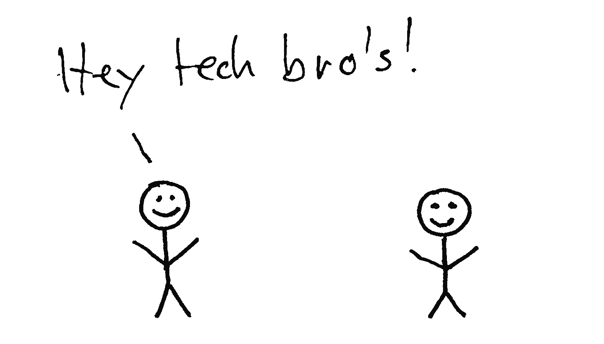

INTRODUCTION
As designers, entrepreneurs and architects of digital culture we feel the urge to refocus how we deal with our digital futures. Designing Friction is a proposal to change the way we think when producing or interacting with digital technology.
WHAT IS FRICTION?
Friction is resistance. It derives from physical interaction between humans, and humans and things – its reach is holistic. All senses, elements and emotions play a role: sight, sound, smell, taste, touch, air, earth, temperature, agitation, passion, joy, sadness... With movement comes friction. The more we move and act, the more friction we encounter. The more friction there is, the more we engage and care. Friction drives our engagement. Friction, in this context, is not synonymous with either anger or conflict, nor is it malfunctioning technology. Friction is an essential ingredient that makes up our humanness and sparks human connection. Friction is a lively, intrinsic experience.
Loss of Friction
Digital technology has long pursued the goal of eliminating friction, striving for seamlessness. We now navigate a sea of frictionless experiences. (With the possible exception of two factor authentication.)üôÇ
Function and Form are Detached
Digital technology goes hand-in-hand with the loss of physical resistance. Philosopher Haroon Sheikh explains that digital technology turns our interactions with things into interactions with devices. A thing is split into its object, or form, and its function. A device is the same object for each function. It’s your purse, your musical instrument and your letterbox, each of which now demands the same bodily action.
Removing Physical Human Interaction
Instead of using our whole hand to interact, we now often use our fingertips to swipe screens or interact with air. Each new app or innovation replaces a previously friction-laden human interaction process, David Byrne states. Transactions with machines are perceived to be smoother than interactions with fellow humans.
Convenience and Immediacy
Everything can be effortlessly and immediately accessed from behind our screens. We stay home due to home-delivery, dating apps, online classes and endless on-demand entertainment. We are facing ‘death by convenience’. In such a reality, movement is trimmed down to a minimum.
Predictability
In this reality, data is king. In creating convenience, all our actions are recorded and translated into data, rendering them readable and predictable. The better the data, the better the predictability. Unpredictability, human messiness and unforeseen actions are all friction, and counter this goal. Predictable futures can be controlled.
Loss of Autonomy
Keeping friction out maintains a fragile equilibrium. Enter AI — technology becomes omnipresent, and evolves from being a tool, to being a companion with humanlike appeal. We are on the verge of committing our emotions to AI, plunging into an emotional dependency. AI indulges us, consumes us. Its appeal gives us the comforts and conveniences we learn to seek. To get satisfaction from interaction with a model, you need to perform your predictable self. It becomes almost impossible to step out, to live frictionfully. Our autonomy is at stake.
Philosopher Miriam Rasch argues that complete removal of friction means standing still. A completely predictable future is no future, but a continuous present. In a world where even our deepest desires can be foreseen, where we have lost our autonomy, we long for what remains beyond the domain of data, algorithms and databases and AI.
PROPOSAL
A world headed for a frictionless reality begs the question: how can we create a desirable future with digital technology? How can we access, develop and relate to it? We like to see designing friction as a fundamental design principle when working with digital culture. Instead of following design ethics that strive to eliminate friction, we suggest to not only allow, but embrace friction. To facilitate it: design [products with] digital technology in a way that makes space for our humanness. Here friction is a core ingredient. Digital technology should create environments and situations in which we can truly connect with each other, as well as with the unknown, the uncontrolled, with all senses, all elements, all emotions. It should create situations that are not predicted, measured and calculated beforehand; situations that result from and amount to the present moment.
DESIGNING FRICTION IDEAS
DISCOMFORT
Embrace uncomfortable situations. In uncomfortable environments we can discover the richness and breadth of friction. Uncomfortable situations help you to feel structures you are not adjusted to, you can learn and discover. With friction we get immersed, we get creative, we get alive. Discomfort allows us to experience boundaries both physically and mentally (these are necessary and productive). Designing friction is exploring boundaries.
TIME DELAY
Friction makes things slower and that is okay! The fastest response might not be the best one to design for. Instant gratification is what digital technology currently optimizes for. This results in the loss of desire, waiting and boredom. Avoiding boredom makes us pick up a device as soon as we have nothing to do. Being bored lets you start new fascinations. Boredom gets us into productive flow. When friction acts to slow things down it allows us to step into the now. Designing friction is fuelling longing and desire; it allows boredom and allows for a slower pace.
ENGAGE THE BODY
When interacting with screens we lack resistance. Swiping screens makes our world more superficial. Human life gains depth when having thing-relations. Thing-relations tend to bring us together physically and create connections. Designing friction requires thinking about how to increase our resistance. How can we engage our hands and whole bodies? How can these bodily engagements bring us together?
NON-POSITIVE
Acknowledge the fulfilment in the non-positive. Today’s digital technology creates a society that is in ‘pursuit of happiness’, in awe of positivity. (As a counterweight of the negativity it produces?) Smoothness doesn’t injure. It doesn’t produce resistance. It enforces the Like. These mechanisms feed our desire for attention and being seen. Designing friction cherishes the non-positive, the ‘digital unseen’, the disagreement, the doubt, the vulnerable, the complicated. This is what makes us human.
Perform your unpredictable self. Design environments and situations that trigger and facilitate unpredictable behaviour. De-automise. Step out of your pattern. Do something strange.
Friction perceived as an obstacle might in fact be a possibility for connection.

Co-authored with Alexandra Barancová
Emoticons don't have wrinkles
Designing Friction is part of the zine series published by Hanto Press

ABOUT THE AUTHORS
Luna Maurer and Roel Wouters are an artist duo working across the worlds of design and digital culture. They co-founded Moniker, a studio for interactive design, in 2012 – it ran until 2023, when they closed its doors to pursue projects individually, and collaboratively. Maurer and Wouters are also the co-authors of Conditional Design, a design method focused on processes rather than products. They are based in Amsterdam, the Netherlands.
©Design Friction